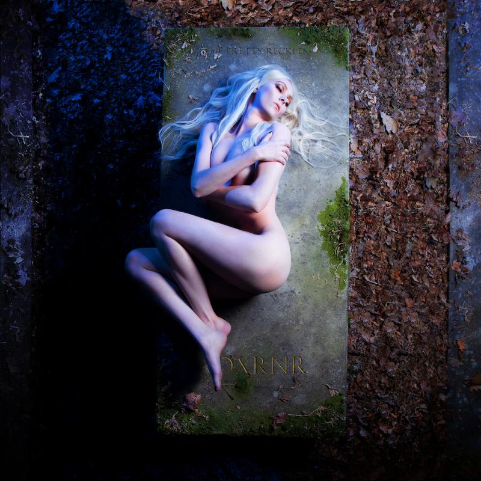

Clientes
Paramore
Paramore requirió los servicios de la empresa para el álbum de "This is Why" (lo cual hasta los mismos fundadores decidieron participar debido a que ambos son fans de la banda). No solo para las sesiones de fotos para el álbum, sino que también para participar como fotógrafos en la gira por latinoamerica. Desde ideas para los videosclips "fuera de lo común" que se presentaban, sesiones de fotos para la publicidad del álbum y participación en la gira. Ambas partes no solo lograron una satisfacción en el trabajo, sino que también, hubo demasiada diversión y entendimiento. Y por palabras de los mismos miembros de la banda, confirmaron que la empresa estará nuevamente contratada para el momento que salga el próximo álbum.
Linkin Park
En el caso de Linkin Park, únicamente se trabajó para el último álbum de Meteora (20th
Anniversary Edition). La excepción que hubo; fue que se trabajó con inteligencia artificial
pero, con bocetos realizados por los diseñadores de la empresa con las ideas que quería
transmitir la banda con sus canciones.
Este trabajo fue el más largo debido a que, se trataba de un álbun con casi noventa canciones y
en todas ellas tenía que tener sus diseños y patrones respectivos. Fue uno de los trabajos que
requirió mucho más esfuerzo de lo que se acostumbra, de todas formas los diseñadores lograron
llevar al objetivo fijado.
The Pretty Reckless
The Pretty Reckless es una banda de rock estadounidense que conserva la cultura original del Rock
Pesado. Además de que es una banda que toca temas "tabúes" que implanta la sociedad. Dicha banda
contrata los servicios de la empresa para sesiones de fotos para la actualización de las redes
sociales, giras y para la portada de su último álbun "Death by Rock & Roll".
Los fotográfos logran plasmar la sensación de serenidad, tranquilidad y fuerza para la portada
del álbum que tanto deseaba la banda (especialmente la vocalista, Taylor Manson). Anteriormente
solo se hacían trabajos de diseño gráfico o para trabajos colaborativos con otros trabajadores
en lado del audiovisual para los videosclips de la banda.
ClavisDevs
Muchas veces hemos trabajado en conjunto con ClavisDevs, normalmente en tema del desarrollo del
maquetado. Llevamos años trabajando en conjunto, además, de que los fundadores de la empresa son
amigos de Gonzalo y ellos conocen el trabajo que es capaz de realziar y el empeño que demuestra
a la hora de diseñar. Siempre la comunicación entre ambas partes es horizontal y continua.
Muy rara vez trabajan en tema de diseño grafico, ya que, mayoritariamente de las veces que
trabajan en conjunto normalmente es por el maquetado web o el desarrollo Front-End. No solo son
capaces de concentrarse en el diseño, sino que también; en averiguar los deseos de los clientes
y poder plasmarlos, el descubrimiento de las palabras claves que se deben de incorporar para los
motores de búsqueda, las lluvias de ideas que son capaces de crear ambas partes.
Aunque ClavisDevs sea una empresa en el desarrollo web, hace más enfásis en el back-end. Así
que, algunas veces dejan el lado front-end a PIXELATED IDEA.